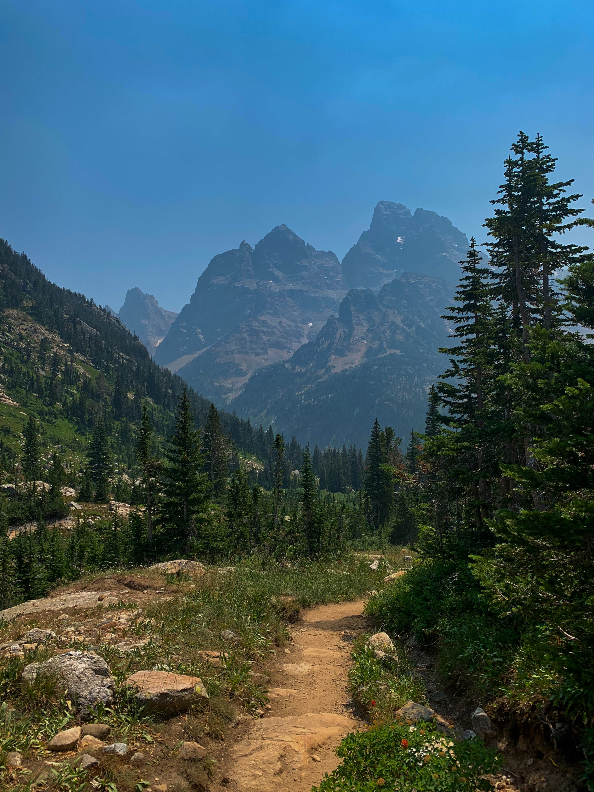

In my immediate family, I have my mom, dad, and brother. We love to do things outdoors as a family and have traveled to a ton of awesome places around the United States.
Usually, my mom can be found bike riding, going for walks, or hiking with my dad. My mom's favorite pass time is probably bike riding. Sometimes, my dad will go for a run and my mom will follow him with water.
When I still lived at home, my mom and I often spent a lot of time in the kitchen together or running errands. As a kid, she would always drive me to soccer practice in Chicago and support me in my passion. When we had tournaments in places like Las Vegas or Phoenix, she would always be there.
Running, hiking, or anything outdoors are my dad's favorite things to do. Lately, my dad and brother have gotten into rock climbing in local places. Ever since I can remember, my dad has been super into running. Amazingly, he can still run thirteen miles in a little under two hours at the age of fifty.
My dad also has worked really hard to give life experiences our family will never forget. At the age of nineteen, I have been to about thirty-five US states and seen some of the prettiest views. My dad has a passion for the outdoors so he has taken us on some pretty cool vacations to places like the Grand Tetons, North Cascades, Yellowstone, and several ski trips out in the Rocky Mountains.

Three years older than me, my brother is twenty-two and is the coolest person I've ever met. Although sometimes he gets sick of me, we enjoy spending time together getting food or going for drives when I'm home from college. Sometimes I have to beg for him to hangout with me, but that is okay with me.
Similar to everybody else in my family, he enjoys the outdoors, too. When we go on vacations, I like to take photos of him hiking for the aesthetic. Also, me and my brother are way better at hiking than my parents so we will usually trudge ahead on the trails and get to the views before my parents. On one of the ski trips, I remember he was out with my dad on the slopes and my mom and I were at the condo. My brother came back with his face bleeding from falling on some rocks, which I thought was really funny at the time.